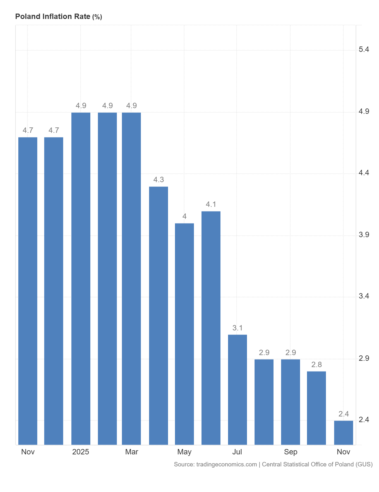
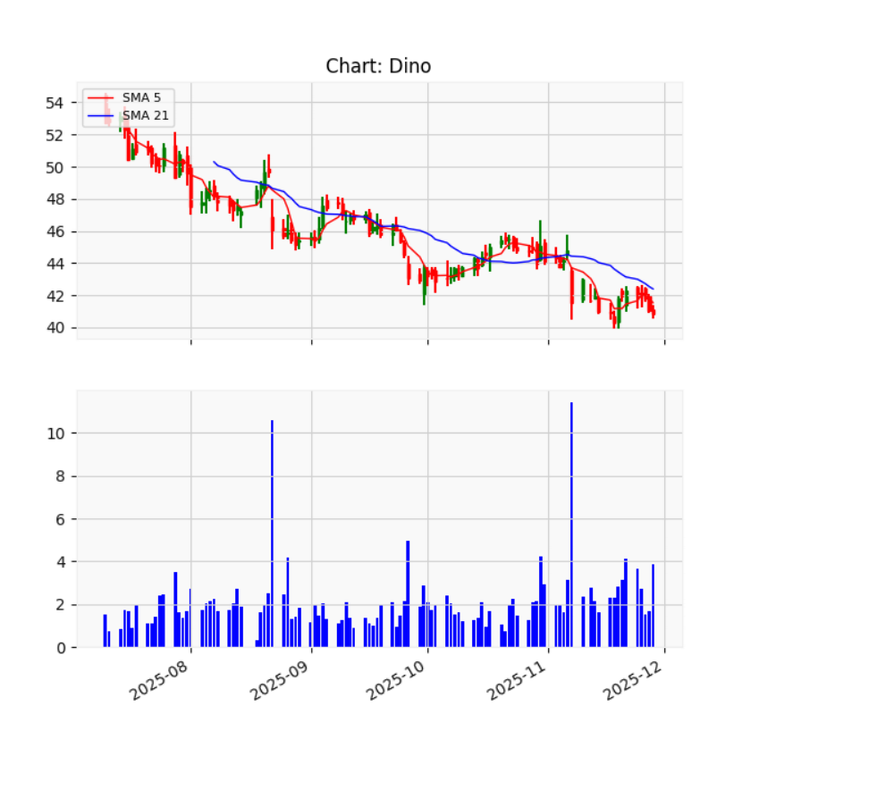
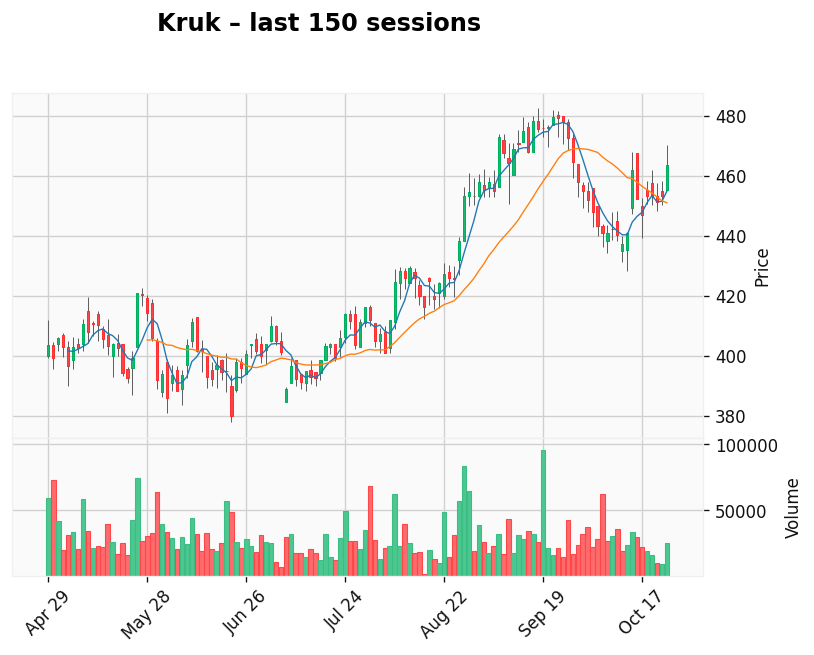

AI-generated analysis combining technical predictive modeling and current macroeconomic context.
Foxorox AI currently detects a bearish shift in sentiment across several Polish retail equities — including LPP and Dino. Meanwhile, Polish inflation has dropped sharply to just 2.4% — the lowest reading in nearly three years.
While falling inflation increases purchasing power, it paradoxically removes one of the biggest revenue drivers for retailers in the last two years: price-led growth. The shift forces markets to reassess how much of prior revenue growth was inflation optics vs. true volume or efficiency gains.
The chart below shows monthly CPI inflation based on National Bank of Poland statistics. After double-digit inflation through 2023–2024, inflation has now normalized near target:
Source: NBP / Statistics Poland
This explains why the AI model detects higher probability of negative pricing pressure in the near term — despite positive macro headlines.
Scaling fashion retailer with strong online and international presence — but now more dependent on real unit demand and operational execution.
Expansion-driven grocery chain. Still resilient due to necessity-based retail, but inflation tailwind fades.
A discretionary footwear retailer — most exposed to slowing nominal growth, price promotions and cost rigidity.
| Company | Business Model | P/E | P/BV | Inflation Sensitivity | Commentary | Live Chart |
|---|---|---|---|---|---|---|
| LPP | Fashion retailer, hybrid offline/online model | ~23.4 | ~4.8 | High | Margins depend on merchandising accuracy and markdown control. |
|
| Dino | Value grocery chain with rapid store rollout | ~27.9 | ~7.2 | Medium | Traffic stable, but growth normalizes without inflation boost. |
|
| CCC | Discretionary footwear & accessories | ~18.6 | ~1.9 | High | Despite high leverage, CCC may benefit from falling interest rates as refinancing becomes cheaper. |
|
Dino — Bearish Probability: 57.37% (Gap: 34.71%)
LPP — Bearish Probability: 54.95% (Gap: 9.43%)
